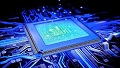
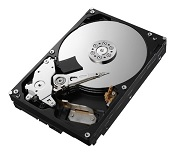
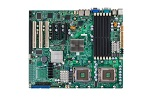
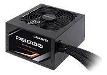
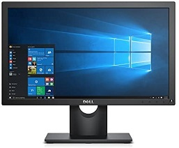
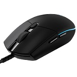
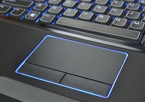
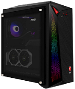

DE QUE SE COMPONE UNA COMPUTADORA?
Esta es mi primera pagina web, tarea de la asignatura de Procesamiento de Informacion por Medios Digitales.
Que es una computadora?
Básicamente, una computadora es una máquina capaz de realizar operaciones y cálculos. No es ni más ni menos que una calculadora. Actualmente, un computadora puede ser un PC o un Mac, pero al fin y al cabo, ¡es lo mismo!
La sigla PC significa Personal Computer (computadora personal) y satisface las necesidades de un usuario. El usuario puede hacer que realice operaciones e interactúe con él a través de dispositivos. Apareció a principios de la década de los 80 cuando IBM lanzó su primer PC/XT. Puedes aprender más sobre estas siglas en nuestro curso de excel. Estas computadoras, a diferencia de otros microcomputadores existentes en ese momento, estaban compuestos de componentes estándar, fáciles de duplicar.
Hoy el día, el PC (Apple o Microsoft) es el tipo de computadora más utilizada, aunque también hay computadoras para aplicaciones muy específicas, como las de un coche, por ejemplo.
Componentes de una computadora
Procesador
El procesador, conocido también como CPU o micro, es básicamente el cerebro del equipo (ya sea notebook o PC). Entre las principales funciones que realiza, se encuentran la ejecución de aplicaciones y la coordinación de los demás dispositivos que componen una PC. Disco duro interno
Un disco duro es una unidad de hardware que se usa para almacenar contenido y datos digitales en las computadoras. Todas las computadoras tienen un disco duro interno, pero también hay discos duros externos que pueden usarse para ampliar el almacenamiento de una computadora. Motherboard o Tarjeta madre
La placa base, también conocida como tarjeta madre, placa madre o placa principal, es una tarjeta de circuito impreso a la que se conectan los componentes que constituyen la computadora. Es una parte fundamental para montar cualquier computadora personal de escritorio o portátil o algún dispositivo.
Fuente de alimentacion
La placa base, también conocida como tarjeta madre, placa madre o placa principal, es una tarjeta de circuito impreso a la que se conectan los componentes que constituyen la computadora. Es una parte fundamental para montar cualquier computadora personal de escritorio o portátil o algún dispositivo.


El ratón o mouse es un dispositivo apuntador utilizado para facilitar el manejo de un entorno gráfico en una computadora. Generalmente está fabricado en plástico, y se utiliza con una de las manos.

El trackpad p touchpad es un término tecnológico del inglés para referirse a un panel táctil que permite controlar un cursor o facilitar la navegación a través de un menú o de cualquier interfaz gráfica.


Gracias por ver. Fernando Daniel Flores Chams 101